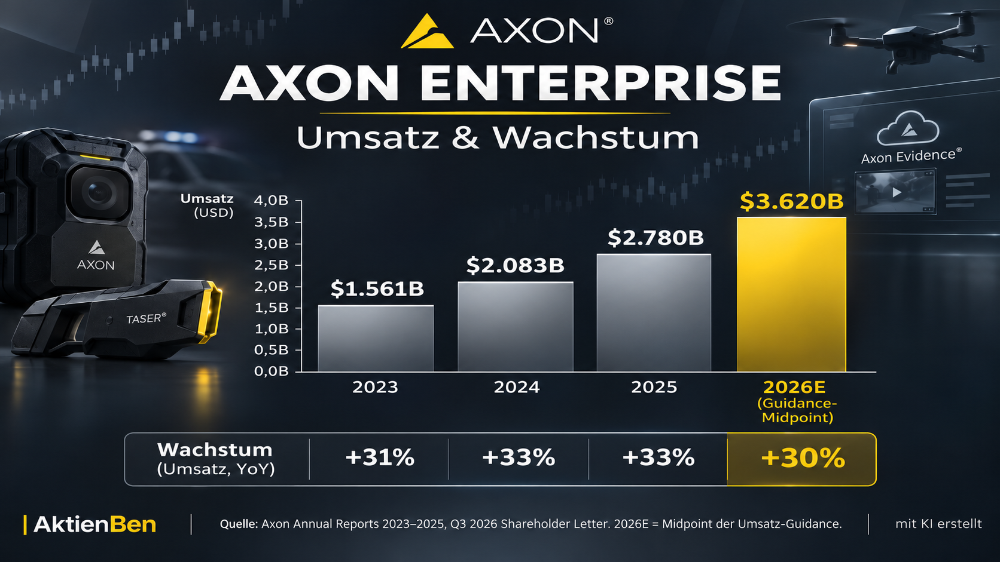
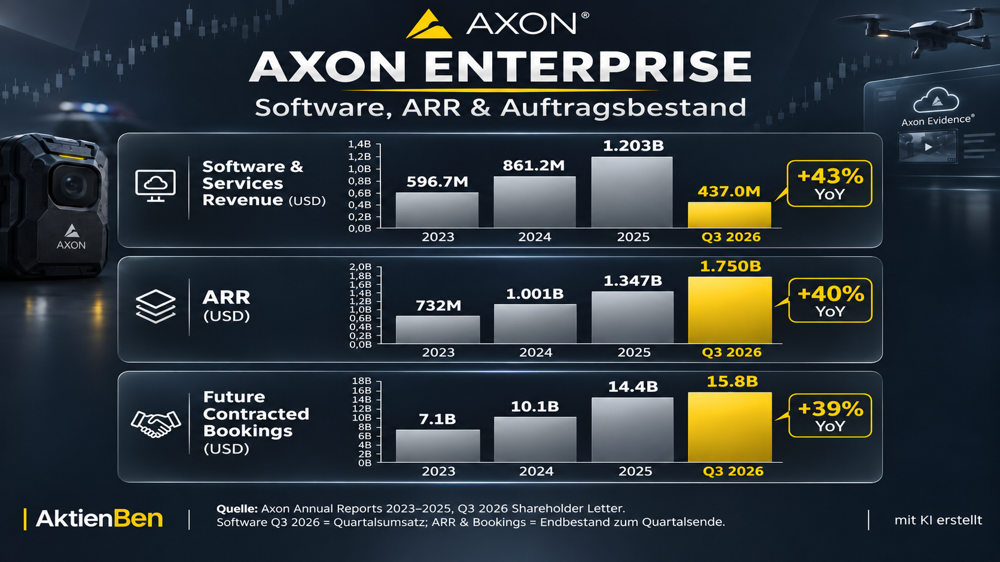
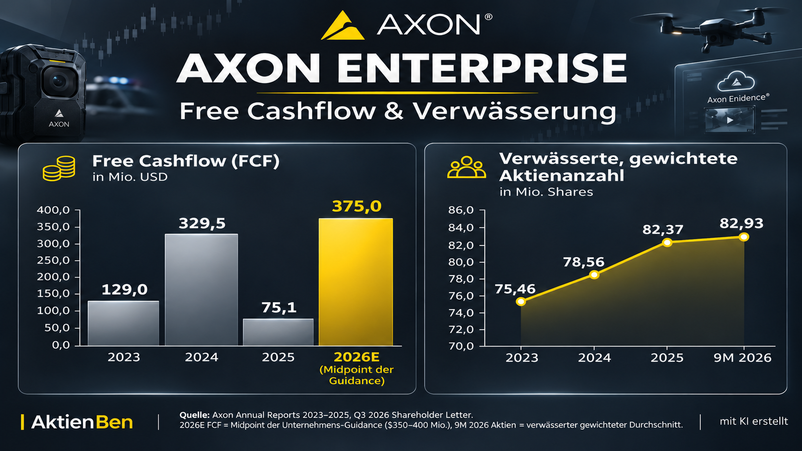

Axon Enterprise – Die Zukunft der öffentlichen Sicherheit
Bei Axon Enterprise bin ich weiterhin SUPERBULLISH. Das Unternehmen gehört für mich zu den interessantesten langfristigen Wachstumswerten am Aktienmarkt. Meine aktuelle Position umfasst 16 Aktien mit einem durchschnittlichen Einstandskurs von 384 €. Zuletzt habe ich am 9. November 2026 zwei weitere Aktien zu jeweils 270 € gekauft. Mein Anlagehorizont liegt bei drei bis sechs Jahren. Der Grund für meinen Optimismus liegt nicht allein in den beeindruckenden Wachstumszahlen. Axon entwickelt sich zunehmend von einem Hersteller von TASER-Geräten und Bodycams zu einer integrierten Technologieplattform für die öffentliche Sicherheit. Dabei spielen Software, künstliche Intelligenz, Drohnen und digitale Beweissicherung eine immer wichtigere Rolle. Die eigentliche Investmentthese lautet: Axon könnte zu einem der größten Profiteure der weltweiten Digitalisierung öffentlicher Sicherheitsbehörden werden.
Vom Hardwarehersteller zum Technologie-Ökosystem
Was Axon für mich besonders interessant macht, ist die enge Verzahnung seiner Produkte. Bodycams, TASER-Geräte, Drohnen, Einsatzmanagementsysteme, KI-Anwendungen und die digitale Beweissicherung greifen zunehmend ineinander. Aufnahmen einer Bodycam können beispielsweise automatisch in Axon Evidence gespeichert und anschließend durch KI-Anwendungen verarbeitet werden. Mit Draft One lassen sich auf Grundlage solcher Aufnahmen Entwürfe für Polizeiberichte erstellen, die anschließend von Beamten überprüft und ergänzt werden. Je mehr Lösungen eine Behörde verwendet, desto stärker wird Axon in deren Infrastruktur integriert. Gleichzeitig steigt der Aufwand, sämtliche Systeme durch Produkte eines anderen Anbieters zu ersetzen. Daraus entsteht eine zunehmende Kundenbindung, die langfristig einen Wettbewerbsvorteil darstellen kann. Axon kann dadurch nicht nur neue Behörden als Kunden gewinnen, sondern auch innerhalb seiner bestehenden Kundenbasis wachsen. Eine Behörde, die bereits Bodycams und Axon Evidence nutzt, kann zusätzliche KI-Anwendungen, Verwaltungssoftware oder Drohnentechnologien einführen. Die Net Revenue Retention von 126 % im dritten Quartal 2026 verdeutlicht dieses Potenzial. Vereinfacht gesagt gaben die Kunden von Axon dieses Quartal 1,26 mal soviel aus, wie noch im Vorjahresquartal. Auch die internationale Expansion eröffnet neue Möglichkeiten. Neben dem Heimatmarkt USA gewinnt Axon unter anderem in Kanada und Europa an Bedeutung. Dabei sollte der Wettbewerb nicht unterschätzt werden. Motorola Solutions verfolgt ebenfalls eine Strategie integrierter Sicherheits- und Softwarelösungen. Axon muss seinen Wettbewerbsvorteil deshalb immer wieder durch Innovation, Produktqualität und tatsächlichen Kundennutzen beweisen. Besonders spannend finde ich das langfristige Marktpotenzial. Axon beziffert seinen adressierbaren Gesamtmarkt für öffentliche Sicherheit inkl. Digitalisierung inzwischen auf rund 159 Mrd. USD. Die Digitalisierung der öffentlichen Sicherheit steht in vielen Bereichen noch am Anfang. Bereits heute zeigen konkrete Kundenbeispiele, welchen Nutzen neue Technologien schaffen können. Das Chula Vista Police Department in Kalifornien äußerte sich gegenüber NBC News positiv über Axons KI-gestützte Berichtserstellung. Auch das Lafayette Police Department berichtete über erhebliche Zeitersparnisse. In einem von Axon dokumentierten Kundenbeispiel konnte Draft One rund 90 % eines Polizeiberichts in Sekunden erstellen, für den normalerweise etwa 25 bis 30 Minuten manuelle Arbeit erforderlich gewesen wären. Ein weiterer Wachstumstreiber könnten Drohnen werden. Mit dem Konzept Drone as First Responder lassen sich bereits vor dem Eintreffen von Einsatzkräften Informationen über eine Einsatzlage gewinnen. Axons im November 2026 angekündigte Investition von 1,2 Mrd. USD in Skydio unterstreicht, welche strategische Bedeutung das Management diesem Bereich beimisst. Die Beteiligung an Skydio soll dadurch auf 37 % steigen. Für mich entsteht hier eine interessante Kombination: Axon verkauft nicht nur technische Ausrüstung, sondern zunehmend komplette digitale Arbeitsabläufe. Genau darin sehe ich das langfristige Potenzial des Geschäftsmodells.
Starkes Wachstum – aber wie profitabel ist Axon?
Die operative Entwicklung der vergangenen Jahre ist beeindruckend. Zwischen 2023 und 2025 stieg der Umsatz von rund 1,56 Mrd. auf 2,78 Mrd. USD. Das entspricht einem durchschnittlichen jährlichen Wachstum von etwa 33 %. Auch 2026 setzt sich diese Entwicklung fort. Im dritten Quartal erzielte Axon einen Umsatz von rund 909 Mio. USD, 28 % mehr als im Vorjahresquartal. Besonders stark entwickelte sich das Segment Software & Services mit einem Wachstum von 43 % auf 437 Mio. USD. Für das Gesamtjahr 2026 erwartet das Management inzwischen einen Umsatz zwischen 3,61 und 3,63 Mrd. USD. Das würde einem Wachstum von etwa 30 % entsprechen.

Noch interessanter finde ich allerdings die Entwicklung der wiederkehrenden Umsätze. Die Annual Recurring Revenue (ARR) erreichte zum Ende des dritten Quartals 2026 rund 1,75 Mrd. USD und lag damit 40 % über dem Vorjahreswert. Die jährlich wiederkehrenden Umsätze aus KI-Anwendungen überschritten bereits die Marke von 100 Mio. USD. Axon verdient somit zunehmend Geld mit Software und Dienstleistungen, statt ausschließlich auf einmalige Hardwareverkäufe angewiesen zu sein. Besonders bemerkenswert ist außerdem der Auftragsbestand. Die sogenannten Future Contracted Bookings erreichten im dritten Quartal einen Rekordwert von 15,8 Mrd. USD, ein Wachstum von 39 % gegenüber dem Vorjahr. Axon erwartet, innerhalb der folgenden zwölf Monate ungefähr 20 bis 25 % dieser vertraglich gebuchten Leistungen zu erfüllen. Rechnerisch entspricht das etwa 3,2 bis 4,0 Mrd. USD.

So überzeugend das Wachstum ist, muss Axon langfristig aber auch beweisen, dass daraus entsprechend hohe Gewinne und freie Cashflows entstehen. Der Free Cashflow entwickelte sich in den vergangenen Jahren aufgrund aktienbasierter Vergütung und hohen Investitionen deutlich weniger konstant als der Umsatz. 2023 erwirtschaftete Axon rund 129 Mio. USD Free Cashflow, 2024 waren es bereits rund 330 Mio. USD. Im Jahr 2025 ging dieser Wert allerdings auf nur noch 75 Mio. USD zurück. Der deutliche Rückgang zeigt, dass starkes Umsatzwachstum nicht automatisch mit steigenden freien Cashflows einhergeht. Axon investiert erheblich in neue Produkte, Kapazitäten und die eigene Infrastruktur. Zudem bindet das operative Geschäft zeitweise größere Mengen an Kapital. Für 2026 erwartet das Management wieder einen deutlichen Anstieg des Free Cashflows auf 350 bis 400 Mio. USD. Allerdings wurde die Prognose von zuvor etwa 450 Mio. USD reduziert, insbesondere wegen zusätzlicher Lagerinvestitionen zur Absicherung der Lieferfähigkeit. Für mich ist das zunächst kein grundsätzliches Problem. Ein stark wachsendes Unternehmen darf und soll investieren, solange dadurch langfristig zusätzlicher Unternehmenswert entsteht. Entscheidend ist aber, dass sich dieses Wachstum irgendwann auch nachhaltig im Free Cashflow widerspiegelt. “Next year, we will call it conservatively half a year of having an inventory investment, and then we expect we can be back to that 60% by 2028.” — Brittany Bagley, CFO, Q3 2026 Earnings Call. “Once we are through these investments, we expect to get back to that target.” — Brittany Bagley, CFO, Q3 2026 Earnings Call. Axon rechnet also mit einer Stabilisierung des FCF in 2027 und das Erreichen des Ziels von 60% FCF-Conversion in 2028. Das passt für mich gut, da ich sowieso für einige Jahre investiert bleiben will. Ein weiterer Punkt ist die aktienbasierte Vergütung. Axon bezahlt Mitarbeiter und Führungskräfte teilweise mit Aktien, wodurch sich die Anzahl der Aktien im Umlauf erhöhen kann. Die verwässerte, gewichtete Durchschnittsaktienzahl stieg von rund 75,5 Mio. im Jahr 2023 auf etwa 82,4 Mio. im Jahr 2025. Das entspricht einem Anstieg von ungefähr 9,2 %. Diese Kennzahl beinhaltet allerdings auch potenziell verwässernde Instrumente und ist nicht mit der reinen Anzahl tatsächlich ausstehender Aktien gleichzusetzen. Gleichzeitig verbuchte Axon 2025 aktienbasierte Vergütungsaufwendungen von rund 634 Mio. USD. Für 2026 erwartet das Management etwa 570 bis 600 Mio. USD. Diese Größenordnung sollte aus Investorensicht nicht ignoriert werden. Denn am Ende ist nicht nur entscheidend, wie stark das gesamte Unternehmen wächst, sondern auch, welcher Anteil des geschaffenen Unternehmenswertes auf jede einzelne Aktie entfällt.

Für meinen langfristigen Anlagehorizont werde ich deshalb besonders beobachten, wie sich der Free Cashflow je Aktie entwickelt und ob Axon die Verwässerung künftig begrenzen kann.
Bewertung und Risiken – was könnte schiefgehen?
Trotz meiner langfristig positiven Einschätzung ist Axon kein risikoloses Investment. Die Aktie wurde in der Vergangenheit teilweise mit sehr hohen Bewertungsmultiplikatoren gehandelt. Auch nach deutlichen Kursrückgängen bleibt entscheidend, wie viel zukünftiges Wachstum bereits im Aktienkurs enthalten ist. Eine hohe Bewertung kann gerechtfertigt sein, wenn ein Unternehmen über viele Jahre außergewöhnlich stark wächst. Sie macht die Aktie allerdings auch anfälliger für Enttäuschungen, siehe Q3 2026. Für 2026 wird ein Free Cashflow zwischen 350 und 400 Mio. USD erwartet. Selbst wenn Axon diesen Wert erreicht, basiert ein erheblicher Teil der Investmentthese auf dem deutlich höheren Cashflow, der in den kommenden Jahren entstehen könnte. Für eine Bewertung bis 2030 halte ich deshalb nicht nur das Umsatzwachstum für entscheidend, sondern insbesondere die zukünftige Free-Cashflow-Marge. Gelingt es Axon, sein Umsatzwachstum über mehrere Jahre auf einem hohen Niveau zu halten und gleichzeitig die Profitabilität deutlich zu steigern, könnte der freie Cashflow erheblich schneller wachsen als der Umsatz. Auch das Zinsumfeld spielt eine Rolle. Eine länger anhaltende restriktive US-Geldpolitik könnte die Bewertung wachstumsstarker Technologieunternehmen belasten, selbst wenn sich deren operatives Geschäft weiterhin gut entwickelt. Weitere Risiken bestehen bei der Einführung neuer Technologien. KI-generierte Polizeiberichte müssen zuverlässig sein, Datenschutzanforderungen erfüllen und von den Behörden akzeptiert werden. Ähnliches gilt für Drohnen und automatisierte Überwachungssysteme.
Fazit
Ich halte Axon Enterprise weiterhin für das interessanteste Unternehmen im Bereich der öffentlichen Sicherheit. Die Kombination aus Hardware, Cloud-Software, künstlicher Intelligenz und Drohnentechnologie eröffnet dem Unternehmen langfristig erhebliche Wachstumschancen und Anwendungsfälle von heute zeigen bereits, wie Kunden von Axon deren Technologie erfolgreich nutzen und weiter ausbauen. Besonders überzeugend finde ich, dass Axon nicht von einem einzigen Produkt abhängig ist. Das Unternehmen kann international expandieren, neue Behörden gewinnen und gleichzeitig seinen bestehenden Kunden zusätzliche Lösungen verkaufen. Die hohe Kundenbindung, das starke Wachstum der wiederkehrenden Umsätze und der umfangreiche Auftragsbestand unterstützen meine Investmentthese. Allerdings muss Axon in den kommenden Jahren beweisen, dass es nicht nur schnell wachsen, sondern auch dauerhaft profitabler werden kann. Für mich werden deshalb vor allem vier Kennzahlen entscheidend sein: das Wachstum der wiederkehrenden Umsätze, die Free-Cashflow-Marge, die Entwicklung der Aktienzahl und die tatsächliche Umsetzung des Auftragsbestands. Ich erwarte nicht, dass das Unternehmen jedes Quartal perfekte Ergebnisse vorlegt. Gerade bei größeren öffentlichen Projekten können zeitliche Verschiebungen auftreten. Solange die langfristige Nachfrage intakt bleibt und Axon seine technologische Position weiter ausbaut, sehe ich darin kein Problem. Die größte Chance liegt für mich darin, dass Axon noch am Anfang eines strukturellen Wandels steht. Wenn der Beitrag gefallen hat, freue ich mich übers weitersagen und jede Form von Unterstützung! Disclaimer: Keine Anlageberatung. Alle Inhalte dienen ausschließlich Informationszwecken und stellen meine persönliche Recherche und Einschätzung dar. Investitionen erfolgen auf eigene Verantwortung und sind mit Risiken verbunden.
Hinweis: Keine Anlageberatung. Alle Angaben sind eigenständig zu überprüfen.